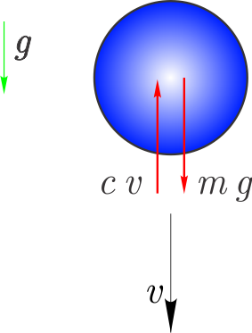
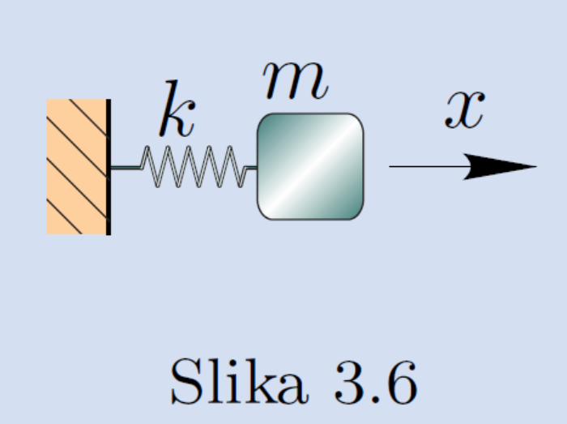

Numerično reševanje diferencialnih enačb - začetni problem#
import numpy as np
from ipywidgets import interact
import matplotlib.pyplot as plt
%matplotlib inline
import sympy as sym
sym.init_printing()
Uvod#
Zapis (ene) diferencialne enačbe#
Predpostavimo, da je mogoče diferencialno enačbo prvega reda zapisati v eksplicitni obliki:
kjer je \(f(t, y)\) podana funkcija in velja \(y'=dy/dx\).
Dodatno je podan začetni pogoj:
Cilj reševanja diferencialne enačbe je izračunati funkcijo \(y(t)\), ki reši zgoraj definiran začetni problem. Ob določenih pogojih funkcije \(f(t, y)\) ima začetni problem enolično rešitev na intevalu, ki vsebuje \(t_0\).
Pri numeričnem reševanju vedno računamo tabelo funkcije \(y(t_i)\), ki reši dan začetni problem. Pri tem so vozlišča \(t_i\) običajno ekvidistantna:
in \(h\) imenujemo (časovni) korak (integracije).
Tukaj si bomo pogledali nekatere numerične metode za reševanje diferencialnih enačb pri začetnem pogoju.
Eulerjeva metoda#
Eksplicitna Eulerjeva metoda temelji na razvoju funkcije \(y\) v Taylorjevo vrsto:
Naredimo napako metode \(\mathcal{O}(h^2)\), ker zanemarimo odvode drugega in višjih redov; sedaj lahko ob znani vrednosti \(y(t)\) in odvodu \(y'(t)=f(t,y)\) ocenimo vrednosti pri naslednjem časovnem koraku \(t+h\). Ko imamo enkrat znane vrednosti pri \(t+h\), ponovimo postopek!
Koraki Eulerjeve metode:
Postavimo \(i=0\), \(t_0\), \(y_0=y(t_0)\).
Izračun vrednosti funkcije pri \(t_{i+1}=t_i+h\): \(y_{i+1}= y_i + f(t_i, y_i)\,h.\)
\(i=i+1\) in nadaljevanje v koraku 2.
Diferencialno enačbo rešujemo na intervalu \([t_0,t_n]\) in velja \(h=(t_n-t_0)/n\). \(n\) je število integracijskih korakov (kolikokrat izvedemo korak 2 v zgornjem algoritmu).
Numerična rešitev začetnega problema:
pri vrednostih neodvisne spremenljivke:
from IPython.display import YouTubeVideo
YouTubeVideo('cfZ8v0b-R8o', width=800, height=300)
Napaka Eulerjeve metode#
Napaka Eulerjeve metode na vsakem koraku je reda \(\mathcal{O}(h^2)\).
Ker na intervalu od \(t_0\) do \(t_n\) tako napako naredimo \(n\)-krat, je kumulativna napaka \(n\,\mathcal{O}(h^2)=\frac{t_n-t_0}{h}\,\mathcal{O}(h^2)=\mathcal{O}(h)\).
Lokalno je napaka drugega reda, globalno pa je napaka prvega reda in ker je Eulerjeva metoda tako nenatančna jo redko uporabljamo v praksi!
Ocena napake#
Točna rešitev \(y(t_n)\) pri velikosti koraka \(h\) je:
kjer je \(y_{n,h}\) numerični približek in \(E_h\) napaka metode. Ker je globalna napaka prvega reda, lahko napako zapišemo kot:
Podobno lahko za velikost koraka \(2h\) zapišemo:
kjer je \(y_{n,2h}\) numerični približek in \(E_{2h}\) napaka metode:
Ob predpostavki, da je konstanta \(k\) pri koraku \(h\) in koraku \(2h\) enaka, lahko določimo oceno napake pri boljšem približku \(E_h\). Očitno velja:
nato določimo oceno napake:
Komentar na implicitno Eulerjevo metodo#
Pri eksplicitni Eulerjevi metodi računamo rešitev pri \(t_{i+1}\) iz izračunane vrednosti pri \(t_i\).
V kolikor bi nastopala neznana vrednost rešitve pri \(t_{i+1}\), to je \(y_{i+1}\), tudi na desni strani, bi govorili o implicitni Eulerjevi metodi (ali povratni Eulerjevi metodi):
Ker se iskana vrednost \(y_{i+1}\) nahaja na obeh straneh enačbe, moramo za določitev \(y_{i+1}\) rešiti (nelinearno) enačbo. Prednost implicitne Eulerjeve metode je, da je bolj stabilna (npr. v primeru togih sistemov, ki jih bomo spoznali pozneje) kakor eksplicitna oblika, vendar pa je numerično bolj zahtevna (zaradi računanja rešitve enačbe).
Numerična implementacija#
Najprej uvozimo potrebne knjižnice:
import numpy as np
import matplotlib.pylab as plt
%matplotlib inline
Nato definirajmo Eulerjevo metodo:
def euler(f, t, y0, *args, **kwargs):
"""
Eulerjeva metoda za reševanje sistema diferencialnih enačb: y' = f(t, y)
:param f: funkcija, ki vrne prvi odvod - f(t, y)
:param t: časovni vektor kjer računamo rešitev
:param y0: začetna vrednosti
:param args: dodatni argumenti funkcije f (brezimenski)
:param kwargs: dodatni argumenti funkcije f (poimenovani)
:return y: vrne np.array ``y`` vrednosti funkcije.
"""
y = np.zeros_like(t)
y[0] = y0
h = t[1]-t[0]
for i in range(len(t)-1):
y[i+1] = y[i] + f(t[i], y[i], *args, **kwargs) * h
return y
Pripravimo funkcijo za oceno napake (v numeričnem smislu bi bilo bolje oceno napake vključiti v funkcijo euler, vendar jo zaradi jasnosti predstavimo ločeno):
def euler_napaka(f, t, y0, *args, **kwargs):
""" Ocena napake Eulerjeve metode; argumenti so isti kakor za funkcijo `euler`
"""
n = len(t)
if n < 5:
raise Exception('Vozlišč mora biti vsaj 5.')
if n%2==0: # sodo vozlišč; odstrani eno točko in spremeni na liho (da je sodo odsekov)
n = n - 1
y_h = euler(f, t[:n], y0, *args, **kwargs)
y_2h = euler(f, t[:n:2], y0, *args, **kwargs)
E_h = y_h[-1] - y_2h[-1]
return E_h
Numerični zgled#
Kot primer rešimo diferencialno enačbo, ki opisuje padanje telesa, ki je izpostavljeno sili teže in zračnemu uporu: 
Glede na II. Newtonov zakon, lahko zapišemo diferencialno enačbo:
kjer je \(m\) masa, \(g\) gravitacijski pospešek, \(c\) koeficient zračnega upora in \(v\) hitrost. Diferencialno enačbo bi hoteli rešiti glede na začetni pogoj:
Funkcija desne strani / prvega odvoda \(f(t,y)\) je:
in začetni pogoj:
Definirajmo funkcijo desnih strani:
def f_zračni_upor(t, y, g=9.81, m=1., c=0.5):
return g-c*y/m
Definirajmo začetni pogoj in časovni vektor, kjer nas zanima rezultat:
v0 = 0
t = np.linspace(0, 10, 11)
t
array([ 0., 1., 2., 3., 4., 5., 6., 7., 8., 9., 10.])
Kličemo funkcijo euler za izračun vrednosti \(y\) (hitrost \(v\)):
y = euler(f_zračni_upor, t, y0=v0)
y
array([ 0. , 9.81 , 14.715 , 17.1675 , 18.39375 ,
19.006875 , 19.3134375 , 19.46671875, 19.54335938, 19.58167969,
19.60083984])
Prikažemo rezultat:
plt.plot(t, y)
plt.title('Hitrost mase v odvisnosti od časa')
plt.xlabel('Čas $t$ [s]')
plt.ylabel('Hitrost $v$ [m/s]')
plt.show()
Preverimo sedaj vpliv časovnega koraka:
for n in [11, 101, 1001]:
t = np.linspace(0, 10, n)
y = euler(f_zračni_upor, t, y0=v0, c=0.7)
plt.plot(t, y, label=f'Časovni korak: {t[1]:1.0e}')
plt.title('Hitrost mase v odvisnosti od časa')
plt.xlabel('Čas $t$ [s]')
plt.ylabel('Hitrost $v$ [m/s]')
plt.legend()
plt.show()
Opazimo, da se numerična napaka pri spremembi koraka iz 1 na 0,1 bistveno zmanjša!
Ocenimo še napako pri 100 in 1000 odsekih:
n=101
t = np.linspace(0, 10, n)
euler_napaka(f_zračni_upor, t, y0=v0)

n=1001
t = np.linspace(0, 10, n)
euler_napaka(f_zračni_upor, t, y0=v0)

Ko smo korak zmanjšali na desetino, se je proporcionalno zmanjšala tudi napaka (prvi red napake).
Poglejmo še primer, ko je zračni upor c argument funkcije euler in je prek **kwargs posredovan v funkcijo f_zračni_upor():
for c in np.linspace(0, 1, 5):
t = np.linspace(0, 5, 1001)
y = euler(f_zračni_upor, t, y0=v0, c=c)
plt.plot(t, y, label=f'$c={c}$')
plt.title('Hitrost mase v odvisnosti od časa pri različnem koef. zračnega upora')
plt.xlabel('Čas $t$ [s]')
plt.ylabel('Hitrost $v$ [m/s]')
plt.legend()
plt.show()
Metoda Runge-Kutta drugega reda#
Eulerjeva metoda je prvega reda (prvega reda je namreč globalna napaka \(\mathcal{O}(h)\)). Če bi želeli izpeljati metodo drugega reda napake, bi si morali pomagati z razvojem \(y(t+h)\) v Taylorjevo vrsto, kjer bomo zanemarili tretji in višje odvode:
Lokalna napaka metode bo tako tretjega reda, globalna pa drugega reda.
Uporabimo zamenjavi \(y'(t)=f(t,y)\) in \(y''(t)=f'(t,y)\):
Ker je desna stran \(f(t,y)\) odvisna od neodvisne \(t\) in odvisne spremenljivke \(y\), moramo uporabiti implicitno odvajanje:
Vstavimo v izraz za Taylorjevo vrsto:
Kot je razvidno iz zgornjega izraza, potrebujemo dodatne odvode. To predstavlja določeno težavo, ki se ji lahko izognemo na različne načine; v nadaljevanju si bomo pogledali pristop Runge-Kutta. Ker bomo zgornji izraz pozneje še potrebovali, smo ga tukaj poimenovali \(y(t+h)_{\textrm{Taylor}}\).
Ideja pristopa Runge-Kutta#
Zgornjo dilemo metoda Runge-Kutta (razvita leta 1901) rešuje z idejo, ki smo jo sicer že srečali pri Gaussovi integraciji: točnejšo rešitev poskuša najti z uteženo dodatno vrednostjo funkcije \(f\):
kjer so \(c_0\), \(c_1\), \(p\) in \(q\) neznane konstante (načeloma od 0 do vključno 1). Če bi v zgornjem izrazu uporabili \(c_1=0\), bi izpeljali metodo prvega reda; z dodatno funkcijsko vrednostjo (\(A\)) pa se bo izkazalo, da bomo izpeljali metodo drugega reda.
Iskanje neznanih konstant \(c_0\), \(c_1\), \(p\), \(q\) nadaljujemo z zapisom \(A\) v obliki Taylorjeve vrste prvega reda:
Vstavimo sedaj izpeljani \(B\) nazaj v izraz za \(y(t+h)_{\textrm{Runge-Kutta}}\):
Nadaljujemo z izpeljevanjem in enačbo preoblikujemo, da bo podobna zgoraj izpeljani s Taylorjevo vrsto \(y(t+h)_{\textrm{Taylor}}\):
Primerjajmo sedaj z zgoraj izpeljanim izrazom:
Ugotovimo, da za enakost mora veljati:
Imamo torej tri enačbe in štiri neznanke. Eno od konstant si tako lahko poljubno izberemo, ostale tri pa izračunamo. Če na primer izberemo \(c_0=0\), bi to imenovali spremenjena Eulerjeva metoda in bi ostali parametri bili: \(c_1=1\), \(p=q=1/2\). Izbira parametrov nima bistvenega vpliva na rešitev. Sicer pa velja omeniti, da tudi metodo Runge-Kutta drugega reda redko uporabljamo, saj obstajajo boljše metode.
Parametre \(c_0\), \(c_1\), \(p\) in \(q\) vstavimo v prvo enačbo tega poglavja. Ko je definiran začetni čas \(t_0\) in začetni pogoj \(y_0\), uporabimo metodo Runge-Kutta drugega reda:
Metoda Runge-Kutta četrtega reda#
Podobno kot smo izpeljali metodo Runge-Kutta drugea reda, se izpelje metodo Runge Kutta četrtega reda. Tudi pri metodi četrtega reda obstaja več različic in kot metoda Runge-Kutta četrtega reda razumemo naslednjo metodo:
kjer so:
Koraki metode Runge-Kutta četrtega reda so:
Določitev \(i=0\) in \(t_0\), \(y_0=y(t_0)\),
Izračun koeficintov: \(k_0\), \(k_1\), \(k_2\), \(k_3\),
Izračun vrednosti rešitve diferencialne enačbe pri \(t_{i+1}=t_i+h\): \(\quad y_{i+1}=y_i+\frac{1}{6}(k_0+2\,k_1+2\,k_2+k_3),\)
\(i=i+1\) in nadaljevanje v koraku 2.
Napaka metode Runge-Kutta četrtega reda#
Metodo Runge-Kutta četrtega reda imenujemo tako zato, ker ima lokalno napako petega reda \(\mathcal{O}(h^5)\), vendar pa to napako naredimo \(n\)-krat, zato je globalna napaka četrtega reda \(\mathcal{O}(h^4)\).
Ocena napake#
Točen rezultat \(y(t_n)\) pri velikosti koraka \(h\) je:
kjer je \(y_{n,h}\) numerični približek rešitve in \(E_h\) napaka metode. Ker je globalna napaka četrtega reda, lahko napako zapišemo tako:
Podobno lahko za velikost koraka \(2h\) zapišemo:
kjer je \(y_{n,2h}\) numerični približek rešitve in \(E_{2h}\) napaka metode:
Ob predpostavki, da je konstanta \(k\) pri koraku \(h\) in koraku \(2h\) enaka, lahko izračunamo oceno napake pri boljšem približku \(E_h\).
Najprej je res:
sledi:
in nato določimo oceno napake natančnejše rešitve:
Numerična implementacija#
def runge_kutta_4(f, t, y0, *args, **kwargs):
"""
Metoda Runge-Kutta 4. reda za reševanje diferencialne enačbe: y' = f(t, y)
:param f: funkcija, ki jo kličemo s parametroma t in y in vrne
vrednost prvega odvoda
:param t: ekvidistanten časovni vektor oz. neodvisna spremenljivka
:param y0: začetna vrednost
:param args: dodatni argumenti funkcije f (brezimenski)
:param kwargs: dodatni argumenti funkcije f (poimenovani)
:return y: funkcijske vrednosti.
"""
def RK4(f, t, y, *args, **kwargs):
k0 = h*f(t, y, *args, **kwargs)
k1 = h*f(t + h/2.0, y + k0/2.0, *args, **kwargs)
k2 = h*f(t + h/2.0, y + k1/2.0, *args, **kwargs)
k3 = h*f(t + h, y + k2, *args, **kwargs)
return (k0 + 2.0*k1 + 2.0*k2 + k3)/6.0
y = np.zeros_like(t)
y[0] = y0
h = t[1]-t[0]
for i, ti in enumerate(t[1:]):
y[i+1] = y[i] + RK4(f, ti, y[i], *args, **kwargs)
return y
Funkcija za oceno napake:
def runge_kutta_4_napaka(f, t, y0, *args, **kwargs):
""" Ocena napake metode Runge Kutta 4; argumenti isti kakor za `runge_kutta_4`
"""
n = len(t)
if n < 5:
raise Exception('Vozlišč mora biti vsaj 5.')
if n%2==0: # sodo vozlišč; odstrani eno točko in spremeni na liho (da je sodo odsekov)
n = n - 1
y_h = runge_kutta_4(f, t[:n], y0, *args, **kwargs)
y_2h = runge_kutta_4(f, t[:n:2], y0, *args, **kwargs)
E_h = (y_h[-1] - y_2h[-1])/15
return E_h
Numerični zgled#
Poglejmo sedaj primer izračuna hitrosti padajoče mase:
def f_zračni_upor(t, y, g=9.81, m=1., c=0.5):
return g-c*y/m
Podajmo začetni pogoj in časovni vektor, kjer nas zanima rezultat:
v0 = 0
t = np.linspace(0, 10, 11)
t
array([ 0., 1., 2., 3., 4., 5., 6., 7., 8., 9., 10.])
Za primerjavo izračunajmo rešitev s funkcijo euler ter runge_kutta_4:
y_euler = euler(f_zračni_upor, t, y0=v0, c=0.4)
y_rk4 = runge_kutta_4(f_zračni_upor, t, y0=v0, c=0.4)
Prikažemo rezultat:
plt.plot(t, y_euler, label='Euler')
plt.plot(t, y_rk4, label='RK4')
plt.title('Hitrost mase v odvisnosti od časa')
plt.xlabel('Čas $t$ [s]')
plt.ylabel('Hitrost $v$ [m/s]')
plt.legend()
plt.show()
Poglejmo še numerično napako:
n=101
t = np.linspace(0, 10, n)
runge_kutta_4_napaka(f_zračni_upor, t, y0=v0, c=0.4)
n=1001
t = np.linspace(0, 10, n)
runge_kutta_4_napaka(f_zračni_upor, t, y0=v0, c=0.4)

Pri zmanjšanju koraka na desetino, se je napaka zmanjšala za približno \(10^4\)-krat (kar ustreza pričakovanjem za metodo četrtega reda).
Stabilnost reševanja diferencialnih enačb*#
Numerično reševane diferencialnih enačb je izpostavljeno napaki metode in zaokrožitveni napaki. Te napake so pri različnih numeričnih metodah različne.
Reševanje diferencialne enačbe je stabilno, če majhna sprememba začetnega pogoja vodi v majhno spremembo izračunane rešitve; sicer govorimo o nestabilnosti reševanja.
Stabilnost je odvisna od diferencialne enačbe, od uporabljene numerične metode in od koraka integracije \(h\).
Primer preprostega nihala#
Poglejmo si najprej primer reševanja diferencialne enačbe preprostega nihala. 
Slika (vir: Slavič, Dinamika, mehanska nihanja in mehanika tekočin, 2017) prikazuje dinamski sistem (masa \(m\), togost \(k\)), katerega diferencialna enačba je
Tako diferencialno enačbo preoblikujemo v standardno obliko lastnega nihanja:
kjer je lastna krožna frekvenca:
in pričakujemo odziv oblike:
Če so začetni pogoji:
je rešitev začetnega problema:
Numerični zgled#
Najprej definirajmo vektor začetnih pogojev in funkcijo desnih strani / prvih odvodov (diferencialno enačbo drugega reda pretvorimo v sistem diferencialnih enačb prvega reda \(\mathbf{y}'=\mathbf{f}(t, \mathbf{y})\)), kjer velja \(y_0=x, y_1=x'\):
def f_nihalo(t, y, omega0=2*np.pi):
"""
Funkcija desnih strani za nihalo z eno prostostno stopnjo
:param t: čas
:param y: seznam začetnih vrednosti
:param omega: lastna krožna frekvenca
:return y': seznam vrednosti odvodov
"""
return np.array([y[1], -omega0**2*y[0]])
Definirajmo podatke in analitično rešitev:
x0 = 1.
omega0 = 2*np.pi
x_zacetni_pogoji = np.array([x0, 0.])
t1 = 4.
cas = np.linspace(0, t1, 500)
pomik = x0*np.cos(omega0*cas) # analitična rešitev
hitrost = -x0*omega0*np.sin(omega0*cas) # analitična rešitev
Rešitev s pomočjo metod Euler in Runge-Kutta četrtega reda:
t_Eu = np.linspace(0, t1, 101)
t_RK4 = t_Eu
dt = t_Eu[1]
x_Eu = euler_sistem(f_nihalo, t_Eu, x_zacetni_pogoji)
x_RK4 = solve_ivp(f_nihalo, t_span=(t_RK4[0], t_RK4[-1]), y0=x_zacetni_pogoji, t_eval=t_RK4).y
Prikažimo rezultate:
plt.plot(cas, pomik, label='Analitična rešitev')
plt.plot(t_Eu, x_Eu[:,0], '.', label='Euler')
plt.plot(t_RK4, x_RK4[0], '.', label='Runge-Kutta 4')
plt.legend()
plt.title('Stabilnost različnih metod')
plt.ylabel('Pomik [m]')
plt.xlabel('Čas [s]')
plt.show()
Opazimo, da je Eulerjeva metoda nestabilna in če bi povečali korak, bi postala nestabilna tudi metoda Runge-Kutta četrtega reda.
Zakaj je Eulerjeva metoda tako nestabilna?#
x_Eu[:10,0]
array([ 1. , 1. , 0.93683453, 0.8105036 , 0.62499707,
0.3882947 , 0.1121141 , -0.18859332, -0.49638247, -0.79225904])
Spomnimo se Eulerjeve metode:
ki nam pove, da pomik \(x(t+h)\) določimo glede na lego \(x(t)\) in hitrost \(x'(t)\). Začetni pogoji izhajajo iz skrajnega odmika \(x(t=0)=1\) in takrat je hitrost \(x'(t=0)=0\), kar pomeni, da bo \(x(t+h)=1\). Že v prvem koraku torej naredimo razmeroma veliko napako. Vendar zakaj potem začne vrednost alternirajoče naraščati?
Spomnimo se, da je analitična rešitev \(x(t)=x_0\,\cos(\omega_0\,t)\) in je torej \(x'(t)=-\omega_0\,x_0\,\sin(\omega_0\,t)\).
Vstavimo pripravljena izraza v Eulerjevo metodo in uredimo:
Predpostavimo, da gledamo stanje ob takem času \(t=\pi/(2\omega_0)\), ko velja \(\cos(\omega_0\,t)=0\) in \(\sin(\omega_0\,t)=1\):
V kolikor bo absolutna vrednost izraza \(A\) večja kot 1, bo pri času \(t+h\) vrednost večja kot v predhodnem koraku in v sledečem verjetno spet. Sledi, da lahko pride do nestabilnosti. Da se je izognemo, mora veljati:
Opomba: v nekaterih knjigah boste videli tudi vrednost \(h<2/\omega_0\); enoliče meje za vse diferencialne enačbe ni mogoče definirati; v splošnem pa velja, da je korak definiran relativno glede na najkrajšo periodo \(T\) v diferencialni enačbi (npr.: \(h<2/\omega_0\) je v bistvu enako \(h<2/(2\pi/T)\) oziroma \(h<T/\pi\)). Perioda \(T\) je definirana glede na najvišjo lastno frekvenco sistema \(T=1/f_{\textrm{max}}\), ki jo izračunamo iz lastne vrednosti sistema.
Nekaj vprašanj za razmislek!#
Na sliki (vir: Numerical Methods in Engineering With Python 3, 3rd Ed, Jaan Kiusalaas) je prikazan izstrelek mase \(m\), ki ga izstrelimo s hitrosjo \(v_0\) pod kotom \(\alpha\). Če je sila upora zraka: \(F=c\,v^{3/2}\), potem sta gibalni enačbi:
Opomba: \(v=\sqrt{\dot x^2+\dot y^2}.\) Ustrezne parametre si izmislite.
 Sistem dveh diferencialnih enačb drugega reda zapišite v sistem diferencialnih enačb prvega reda.
2. Določite vektor začetnih pogojev, ki smo ga zgoraj označili z \(\mathbf{y}\).
3. Določite funkcijo desnih strani,
Sistem dveh diferencialnih enačb drugega reda zapišite v sistem diferencialnih enačb prvega reda.
2. Določite vektor začetnih pogojev, ki smo ga zgoraj označili z \(\mathbf{y}\).
3. Določite funkcijo desnih strani, c naj bo parameter.
4. Definirajte začetne pogoje in rešite nalogo s poljubnimi podatki.
5. Prikažite \((x, y)\) lego masne točke, spreminjajte koeficient upora \(c\).
6. Prikažite hitrost v odvisnosti od časa. Določite minimum hitrosti in čas, pri katerem nastane.
Primer Van der Polovega nihala#
Namen tega primera je pokazati, kako lahko izbira integratorja vpliva na hitrost reševanja problema! Van der Polovo nihalo je opisano tukaj.
Definirajmo seznam odvodov:
def f_van_der_pol(t, y, mu=1000):
"""
Funkcija desnih strani za Van der Pol nihalo
:param t: čas
:param y: seznam začetnih vrednosti
:param mu: parameter dušenja in nelinearnosti
:return y': seznam vrednosti odvodov
"""
return np.array([y[1], mu*(1-y[0]**2)*y[1]-y[0]])
x_zacetni_pogoji = np.array([1.5, 0.])
dt = 0.1
t1 = 3000
Rešitev po metodi RK45 (gre za eksplicitno shemo, ki ni primerna za toge sisteme diferencialnih enačb; reševanje je zelo počasno, zato rešitev računamo samo do t1/100):
vp_RK45 = solve_ivp(f_van_der_pol, t_span=(0., t1/100), y0=x_zacetni_pogoji, method='RK45')
Implicitna shema BDF (angl. Backward Differentiation Formulas) se tukaj izkaže kot bistveno bolj primerna. Zaradi stabilnosti, so koraki lahko bistveno večji in zato je reševanje bistveno hitrejše:
vp_BDF = solve_ivp(f_van_der_pol, t_span=(0., t1), y0=x_zacetni_pogoji, method='BDF')
plt.plot(vp_BDF.t, vp_BDF.y[0], 'C1.', label='Pomik - BDF [m]')
plt.plot(vp_RK45.t, vp_RK45.y[0], 'C0.', label='Pomik - RK4 [m]')
plt.xlabel('Čas [s]')
plt.legend(loc=(1.01, 0));
Simbolno reševanje diferencialne enačbe drugega reda#
Pogledali si bomo primer, prikazan na sliki, kjer je masa \(m\) na klancu naklona \(\alpha\). Koeficient trenja je \(\mu\), težnostni pospešek pa \(g\). Začetna hitrost je \(\dot y(0\,\textrm{s})=v_0\), pomik \(y(0\,\textrm{s})=0\,\textrm{m}\).
 Gibalna enačba (samo za smer \(y\)) je definirana glede na II. Newtonov zakon (glejte diagram sil na prosto telo).
Gibalna enačba (samo za smer \(y\)) je definirana glede na II. Newtonov zakon (glejte diagram sil na prosto telo).
Izpeljava gibalne enačbe#
y = sym.Function('y')
m, mu, g, alpha, t, v0 = sym.symbols('m, mu, g, alpha, t, v0')
eq = sym.Eq(m*y(t).diff(t,2), m*g*sym.sin(alpha)-m*g*sym.cos(alpha)*mu)
eq

Rešitev enačbe je:
dsol = sym.dsolve(eq, y(t))
dsol

Da določimo \(C_1\) in \(C_2\), vstavimo \(t=0\,\textrm{s}\):
dsol.args[1].subs(t, 0)
Nato odvajamo po času in ponovno vstavimo \(t=0\,\textrm{s}\):
dsol.args[1].diff(t).subs(t, 0)

Glede na začetne pogoje smo torej določili konstante:
zacetni_pogoji = {'C1': 0, 'C2': v0}
Sledi rešitev:
resitev = dsol.args[1].subs(zacetni_pogoji)
resitev
Pripravimo si funkciji za numerični klic:
podatki = {mu: 0.3, alpha: 15*np.pi/180, v0: 1., g: 9.81} #tukaj uporabimo np.pi, da imamo numerično vrednost
pomik = sym.lambdify(t, resitev.subs(podatki), 'numpy')
hitrost = sym.lambdify(t, resitev.diff(t).subs(podatki), 'numpy')
print('Pomik pri 0s: {:g}m'.format(pomik(0)))
print('Hitrost pri 0s: {:g}m/s'.format(hitrost(0)))
Pomik pri 0s: 0m
Hitrost pri 0s: 1m/s
Pripravimo prikaz:
cas = np.linspace(0, 4, 100)
cas2 = np.linspace(0, 4, 5)
def slika():
plt.plot(cas, pomik(cas), 'C0', label='Pomik [m]')
plt.plot(cas, hitrost(cas), 'C1', label='Hitrost [m/s]')
plt.plot(cas2, pomik(cas2), 'C0o', label='Pomik - velik korak[m]')
plt.plot(cas2, hitrost(cas2), 'C1o', label='Hitrost - velik korak [m/s]')
plt.xlabel('Čas [s]')
plt.ylabel('Pomik [m] / Hitrost [m/s]')
plt.legend(loc=(1.01, 0));
plt.show()
slika()
Simbolno preoblikovanje diferencialne enačbe v sistem diferencialnih enačb prvega reda#
Spomnimo se izvorne diferencialne enačbe:
eq
Definirajmo nove spremenljivke in pripravimo funkcijo \(f\):
y0 = sym.Function('y0')
y1 = sym.Function('y1')
f = sym.simplify(eq.args[1]/m)
f
Povežimo sedaj nove spremenljivke.
\(d y_0/dt\) naj bo enako \(y_1\):
eq1 = sym.Eq(y0(t).diff(t), y1(t))
eq1
Odvod \(d y_1/dt\) (v bistvu je to \(y''\)) naj bo enak funkciji \(f\):
eq2 = sym.Eq(y1(t).diff(t), f)
eq2
Zgornje izraze zapišemo v vektorski obliki: $\(\mathbf{y}'=\mathbf{f}(t, \mathbf{y}).\)$
y_odvod = [y0(t).diff(t), y1(t).diff(t)]
y_odvod
f_vec = [y1(t), f]
f_vec
Spomnimo se sedaj f_vec:
f_vec
Če rešujemo numerično, potem funkcijo \(\mathbf{f}(t, \mathbf{y})\) zapišemo:
pospesek = float((eq.args[1]/m).simplify().subs(podatki))
pospesek #raziščite zakaj smo tukaj tako definirali! namig: type(pospesek)
def F_klada(t, y):
return np.array([y[1], pospesek],dtype=float)
Preverimo funkcijo pri začetnem času \(t=0\,\)s in pri začetnih pogojih \([y_0, y_1]=[0, v_0]\):
y_zacetni_pogoji = np.array([0, podatki[v0]])
y_zacetni_pogoji
array([0., 1.])
F_klada(0., y_zacetni_pogoji)
array([ 1. , -0.30370487])
Uporabimo sedaj Eulerjevo metodo:
#%%timeit
x_Eu = np.linspace(0, 4, 5)
y_Eu = euler_sistem(F_klada, x_Eu, np.array([0, 1.]))
y_Eu
array([[ 0. , 1. ],
[ 1. , 0.69629513],
[ 1.69629513, 0.39259025],
[ 2.08888538, 0.08888538],
[ 2.17777075, -0.2148195 ]])
Prikažemo in primerjamo z analitično rešitvijo:
def narisi_euler(n=5):
x_Eu = np.linspace(0, 4, n)
y_Eu = euler_sistem(F_klada, x_Eu, np.array([0, 1.]))
plt.title('Eulerjeva metoda s korakom $h={:g}$'.format(x_Eu[1]-x_Eu[0]))
plt.plot(cas, pomik(cas), 'C0', label='Pomik - analitično [m]')
plt.plot(cas, hitrost(cas), 'C1', label='Hitrost - analitično [m/s]')
plt.plot(x_Eu, y_Eu[:, 0], 'C0.', label='Pomik - Euler [m]')
plt.plot(x_Eu, y_Eu[:, 1], 'C1.', label='Hitrost - Euler [m/s]')
plt.xlabel('Čas [s]')
plt.ylabel('Pomik [m] / Hitrost [m/s]')
plt.ylim(-0.5, 2.5)
plt.legend(loc=(1.01, 0))
plt.show();
interact(narisi_euler, n=(3, 10, 1));